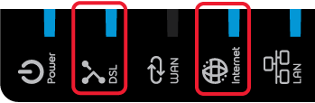
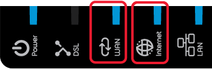

Internet disconnected: Help page
Dear customer,
Your internet connection seems to be down.
How to recover it ?
Please make sure the 'Internet' and 'DSL' leds of your b-box modem are constantly on:
Please make sure the 'Internet' and 'WAN' leds of your b-box modem are constantly on:


If so, please restart your internet browser.
If it is not the case:
- Verify that the cabling between your b-box modem and the phone socket is well connected
- Verify that the cabling between your b-box modem and the ONT is well connected
- Reboot your modem by unplugging the power supply and plugging it back
Should your internet connection still not be up & running after a few minutes, trigger a more in-depth testing of your line on the web:
- Via the hotspot network or
- Via mobile internet (3G)
-
Via the hotspot network
- Search for a Hotspot in your neighborhood by triggering a wireless network search.
- If a Hotspot shows up in the list, double click on it to get connected.
-
Once connected to the hotspot network, browse to the following URL:
https://admit.belgacom.be/eshop/mysupport
- Log on to MyProximus and launch a line check.
Good to know:
- If you have a hotspot Login and Password, you can use this connection until your home internet connection is up and running again
- If you don't have a hotspot account, you can set up your login and password via the MyProximus.
-
Via mobile internet (3G)
NB: The 3G session will be at your own charge. If you don't have a 3G mobile data subscription, please verify the charges before making the connection.
Should your problem persist, feel free to call our technical support on